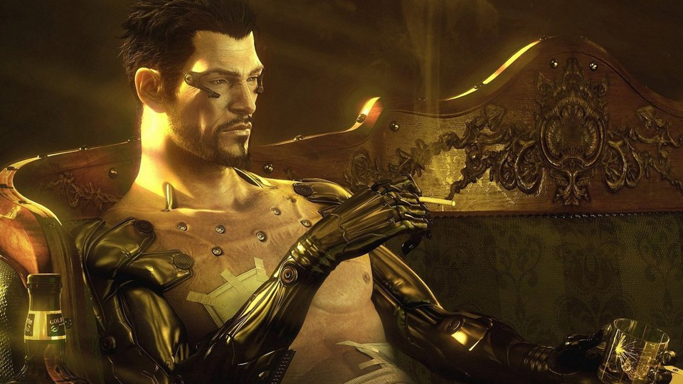

Deus Ex is a series of action role-playing first-person shooter stealth video games. The series was developed by Ion Storm for the first two games and Eidos Montréal for later entries in the series. The series, set during the 21st century, focuses on the conflict between secretive factions who wish to control the world by proxy, and the effects of transhumanistic attitudes and technologies in a dystopian future setting.
The series currently consists of six games: Deus Ex (2000), Deus Ex: Invisible War (2003), Deus Ex: Human Revolution (2011), Deus Ex: The Fall (2013), Deus Ex Go (2016), and Deus Ex: Mankind Divided (2016).
Eidos stated in October 2013 that future entries in the series would go under the umbrella name Deus Ex Universe.[1][2] The series has received much critical acclaim over the years, and sold over 4.5 million units worldwide.
